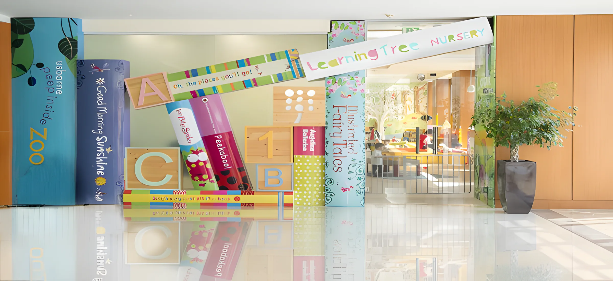
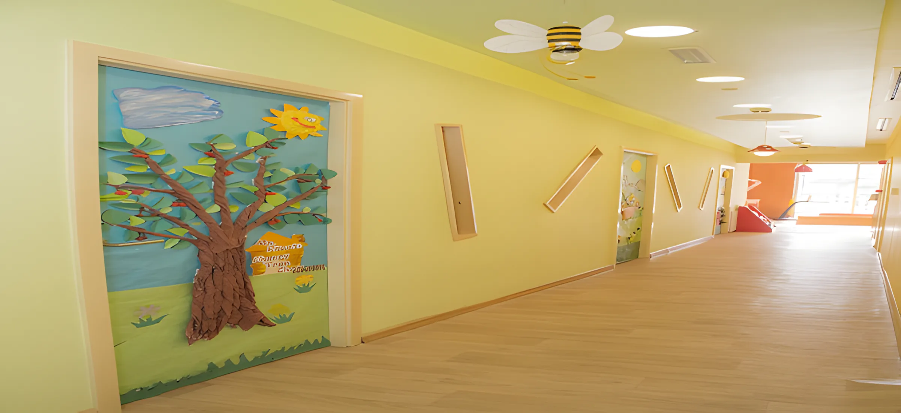
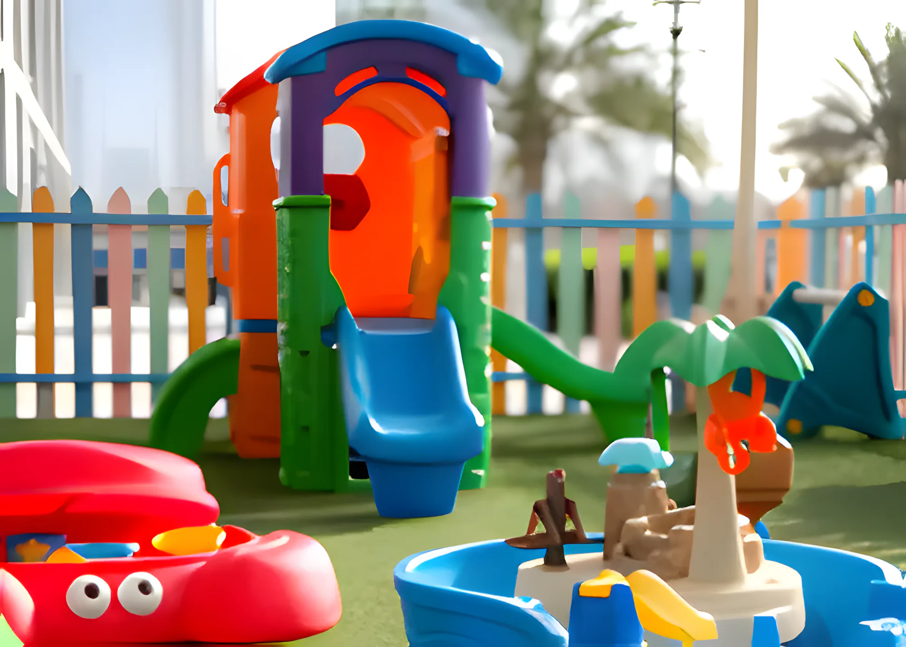
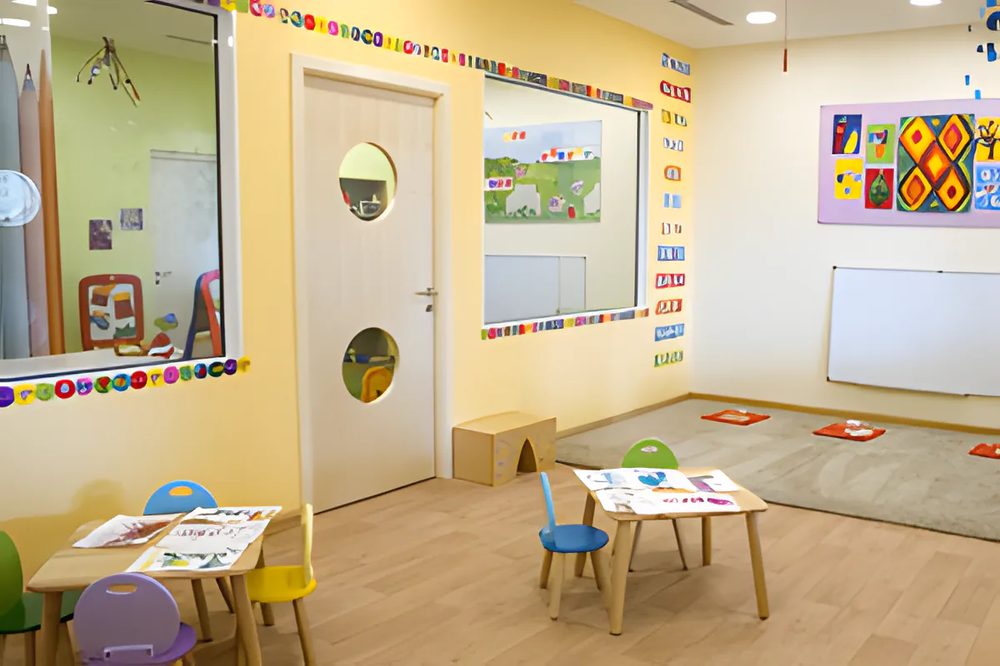

حضانةليرنينغ تري
حضانة الحيّ للأطفال من عمر سنة إلى 4 سنوات، في إكزكتيف تاورز بالخليج التجاري. نتبع المنهج البريطاني للسنوات المبكرة (EYFS)، والمبنى كلّه صفّ واحد.

حضانة الحيّ
«ليرنينغ تري في الأساس حضانة الحيّ. مثل الشجرة، تنمو من حيّنا وتصنع حيّنا.»
من فلسفة ليرنينغ تري
أسّس الحضانة تربويون متمرّسون في منهج السنوات المبكرة البريطاني. كثير من عائلاتنا مقيمون يتنقّلون كثيراً، ومع ذلك يريدون مكاناً ينتمون إليه، لذلك نستقبل كل طفل هنا كفرد من العائلة.
الإنجليزية هي لغة التدريس الأساسية، ولدينا حصص متخصصة في الموسيقى والعربية والفرنسية.

المبنى كلّه صفّ
نسمّي البيئة «المعلّم الثالث». الأطفال لا يبقون في غرفة واحدة طوال اليوم، بل يتنقّلون خلال الأسبوع بين مساحات مخصّصة، وهذا ما نسمّيه «الصفّ المتنقّل».
- 01
الساحة التعليمية Learning Square
قلب الحضانةمنطقة لعب الأدوار الداخلية، مليئة بالضوء الطبيعي، وفيها ركن الأزياء وجدار القراءة ومسرح الأطفال وركن الحاسوب. وهنا يستلم المعلّمون طفلك كل صباح.
- 02
غرفة الفنون والتصميم
رسم، تلوين، تمثيلأنشطة يدوية بتركيز قوي على الفن والتعبير عن النفس.
- 03
منطقة البناء والأرقام
أرقام وبناءأرقام وأشكال وبناء، إحدى محطات الأسبوع.
- 04
غرفة اللغة
كلام وقصصكلمات وقصص وحديث، في الطريق إلى القراءة والكتابة.
- 05
منطقة اللعب الخارجية
خاصة، عشب صناعي تحت مظلّةألعاب مناسبة للعمر، ولعب بالرمل والماء، وأنشطة تربية بدنية.
- 06
صالة أولياء الأمور
الطابق الأول، بجانب الإدارةصباحيات قهوة، مجموعات قراءة، لقاءات الأمهات والصغار، ومحاضرات عن صحة العائلة. وهي أيضاً معرض لأعمال الأطفال.
جولة في الحضانة






الصفوف والمواعيد
اختر ما يناسب عائلتك: يومان أو 3 أيام أو 5 أيام في الأسبوع حسب توفّر المقاعد. أطفال مرحلة التأسيس يحضرون 5 أيام في الأسبوع.
| الصف | يوم قصير | يوم دراسي | يوم كامل |
|---|---|---|---|
| ما قبل الحضانةمن سنة إلى سنتين وأكثر · Pre-Nursery | 8 ص – 12:30 م | 8 ص – 3 م | 8 ص – 6 م |
| الحضانةمن سنتين إلى 3 سنوات وأكثر · Nursery | 8 ص – 12:45 م | 8 ص – 3 م | 8 ص – 6 م |
| ما قبل المدرسةمن 3 إلى 4 سنوات · Pre-School | 8 ص – 1 م | 8 ص – 3 م | 8 ص – 6 م |
أعدادنا صغيرة، لذلك المقاعد محدودة. التسجيل المبدئي مفتوح للفصل القادم.
تفاصيل البرامجأولياء الأمور شركاء
نعمل يداً بيد مع العائلات، وستعرف دائماً كيف يتقدّم طفلك:
- سجلّ التعلّم (Learning Journal) لمتابعة تقدّم طفلك
- لقاءات منتظمة مع المعلّمين
- نشرة أسبوعية بأفكار لدعم التعلّم في البيت
- باب مفتوح دائماً مع معلّمة الصف
تفضّلوا بزيارتنا
G49-50، باي أفينيو، إكزكتيف تاورز، الخليج التجاري، دبي
ص.ب. 124897
- الجولات
- الأحد إلى الخميس، 7:30 ص – 3 م
- الهاتف
- 04 443 4220
- واتساب
- 052 520 0586